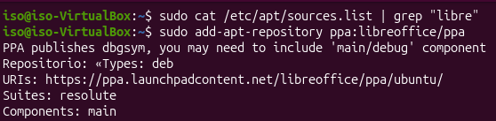
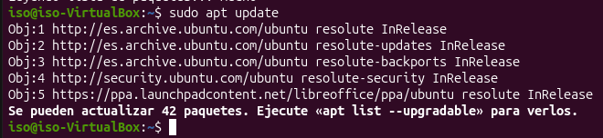
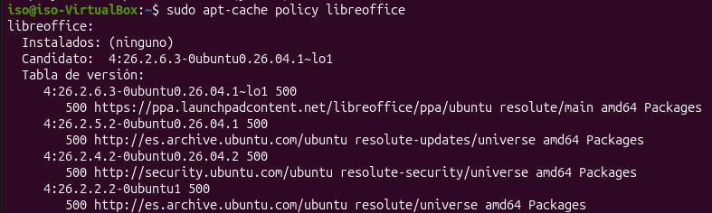
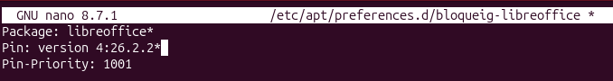
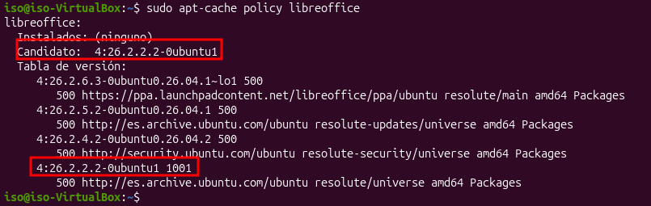

1. APT Pinning
- Crear un fitxer de preferències.
- Definir la política de fixació.
- Aplicar els canvis.
Per a aquesta pràctica, primer he afegit el repositori necessari i he actualitzat la llista de paquets amb apt update:


Després he consultat la política de paquets disponibles amb apt-cache policy i he creat un fitxer de preferències per seleccionar una versió específica:


Finalment, he tornat a executar apt update i he revisat la política de paquets per comprovar que la preferència s'havia aplicat correctament:
